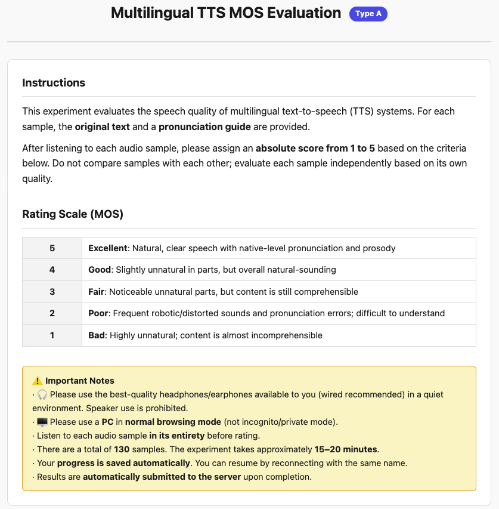
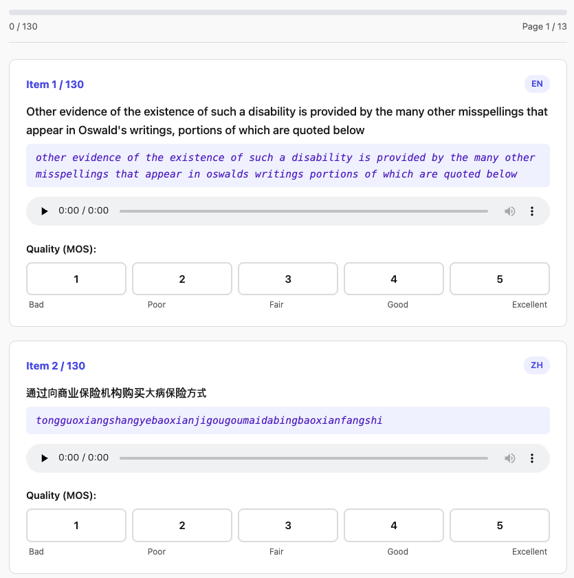

Appendix — MOS Evaluation Setup


Figure: MOS evaluation setup: (a) detailed instructions for quality assessment, and (b) a snapshot of the evaluation interface.
We recruited 44 participants through community outreach. Given the multilingual scope of our evaluation, which spans 11 languages across diverse geographic regions (e.g., the United States, the United Kingdom, Germany, China, as well as regions in Africa and Asia), we selected participants with demonstrated familiarity with at least a subset of the evaluated languages. All participants were fluent in English, and several had lived in or had prior exposure to other language regions (e.g., Germany or Indonesia), ensuring reliable judgments.
To facilitate faithful evaluation, we provided both grapheme transcriptions and Romanized transcriptions for each utterance as phonetic guidance, allowing participants to assess whether the synthesized speech aligned with the intended text. Language information was also displayed for each sample. Participants were instructed to evaluate in a quiet environment using high-quality personal audio equipment (e.g., headphones). The use of loudspeakers was prohibited to avoid variability in acoustic perception. The detailed survey interface is illustrated in the figure above.
| Model | Language Coverage | # Lang. |
|---|---|---|
| VITS | EN, ZH, DE, JV, SU, KM, NP, AF, TN, XH, SI | 11 |
| +m-PLBERT | EN, ZH, DE | 3 |
| +XPhoneBERT | EN, ZH, DE, KM, AF | 5 |
| +UR-BERT | EN, ZH, DE, JV, SU, KM, NP, AF, TN, XH, SI | 11 each (Total 22) |
| • with ATP | ||
| • without ATP |
Table: Details of the TTS models; 41 models in total.
We randomly sampled 10 utterances per configuration. Sample identities were shared across models within each language to enable fair comparison (e.g., VITS, m-PLBERT, XPhoneBERT, and UR-BERT variants for English used identical text prompts). As shown in the table above, this resulted in 520 evaluated samples from 110 ground truth and 410 generated samples.
To mitigate listener fatigue and maintain consistent scoring criteria, the samples were divided into four non-overlapping groups of 130 utterances each (Groups A, B, C, and D). Participants were evenly assigned to groups (11 per group), ensuring that no evaluator assessed overlapping samples.